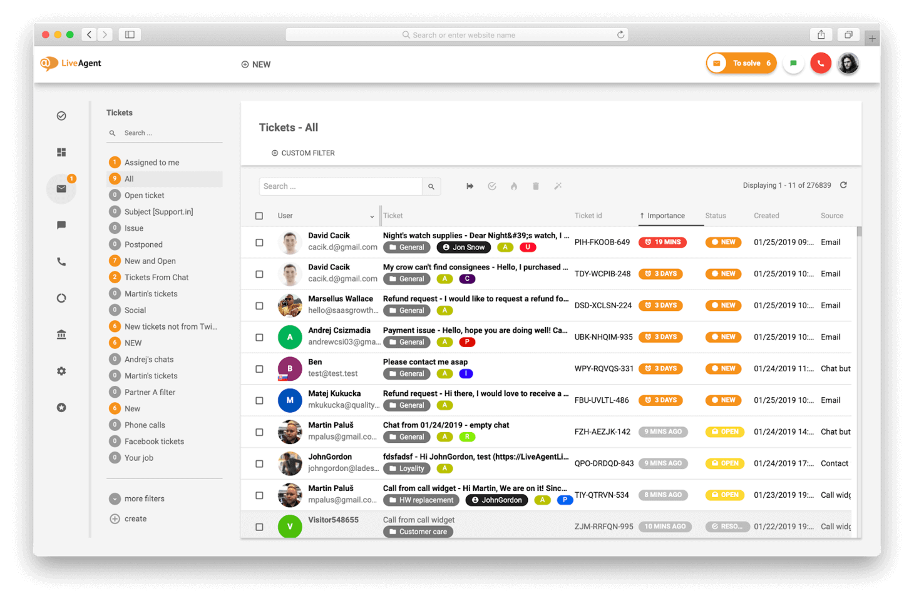

Synthesis In my case, my end-of-year synthesis project was about presenting different types of attacks and creating an incident ticket system where people could add a tag for an attack or error and others could respond. 